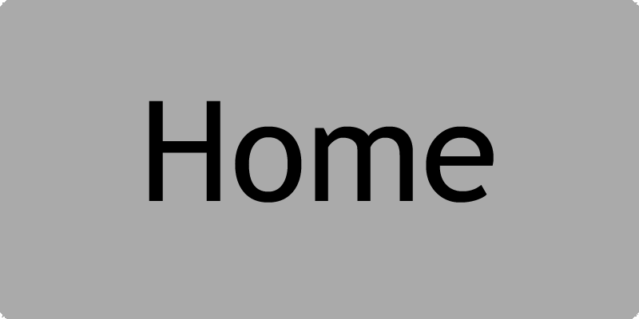

The Official Page

Latest News
Big C accused of treason.
Just after the vote and ban of Nath, it was discovered that Cameron had voted multiple times, with the use of his mobile phone, as it has a different IP address. The decision was made to set Cameron to a listener for 2 weeks.
Nath was reverted to the correct fate, and is now a listener for 2 weeks, as we felt that one month was to harsh. K-mart and Coles customer support has been notified.
Nath banned from Kink Lounge!
Only three days after joining, Nath received his third strike for misbehaviour, going against the guidelines. His three strikes were as follows:
Strike 1: Spamming the chat, even after being asked to stop.
Strike 2: Rapidly updating image and topic, removing official topic.
Strike 3: Disrespecting fellow Kink Lounger, via shutting down of a PC. It resulted in the loss of 20 hours of work.
The decision was made to ban him forever, via a democratic strawpoll.
Although the results were even, a game of Rock, Paper, Scissors was used to randomly decide.
Nath joins the lounge.
On Monday, 8th September 2014, Nath was finally accepted into the Kink Lounge. After some heated discussion the descision to add Nath to the lounge was decided by a strawpoll.
8 Kink Loungers took part in the vote, with 6 agreeing that Nath should become a member. So we are proud to announce that Nath is now one of us! Well Done Nath!

Nath's face after being accepted into the Kink Lounge.
Commemorative logo, displayed just after Nath joined the
Kink Lounge.
Cameron creates fake Twitter account.
Big C has made a fake twitter account, posing as the fictional person, 'Samyo Deano'. Samyo Deano is your typical Detroit resident, and the accounts aim is to interact with some of Detroit's blackest, baddest and most ghetto dank people. The account name is
@your_boy_samyo.
Tweets by @your_boy_samyo